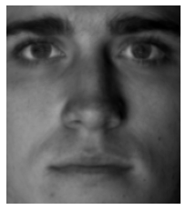
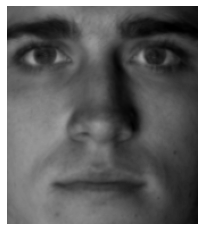

import glob
import numpy as np
import matplotlib.pyplot as plt
from PIL import Image
from sklearn.decomposition import PCA, randomized_svd
def plot(X, x_dim=192, y_dim=168):
"""Just a little helper function to get a nice image plot"""
m = 255 if X.max() > 1 else 1
plt.imshow(X.reshape(x_dim, y_dim), cmap='gray', vmin=0, vmax=m)
plt.axis('off')
We will use Yale face dataset.
# !curl http://vision.ucsd.edu/extyaleb/CroppedYaleBZip/CroppedYale.zip --output CroppedYale.zip
# !unzip CroppedYale.zip
# Read all images into array of shape (2414, 192, 168)
X = np.array([np.asarray(Image.open(path)) for path in glob.glob('CroppedYale/*/*E*.pgm')])
# Reshape to (32256, 2414), so that column spans single image
X = X.reshape(X.shape[0], -1)
Let’s plot one face and it’s reconstructions. We could use SVD or even better randomized SVD, but in sklearn it is easier to use PCA instead.
def plot_reconstructions(img, steps=[10, 20, 50, 100, 200, 500, 1000]):
for r in steps:
pca = PCA(r)
pca.fit(X)
plot(pca.inverse_transform(pca.transform(img[np.newaxis]))[0])
plt.show()
img = X[5]
plot(img)

plot_reconstructions(img)


 


Q: What if we apply same eigenfaces for the non-face image?
img = np.asarray(Image.open('img/dog_crop.jpg')).flatten()
plot(img)
plot_reconstructions(img)


Q: What if image is even less similar to the human face?
img = np.asarray(Image.open('img/dog_full.jpg')).flatten()
plot(img)

plot_reconstructions(img)


For more examples see:
Data-Driven Science and Engineering: Machine Learning, Dynamical Systems, and Control by J. Nathan Kutz and Steven L. Brunton.
Fast AI Computational Linear Algebra course contains background removal example.